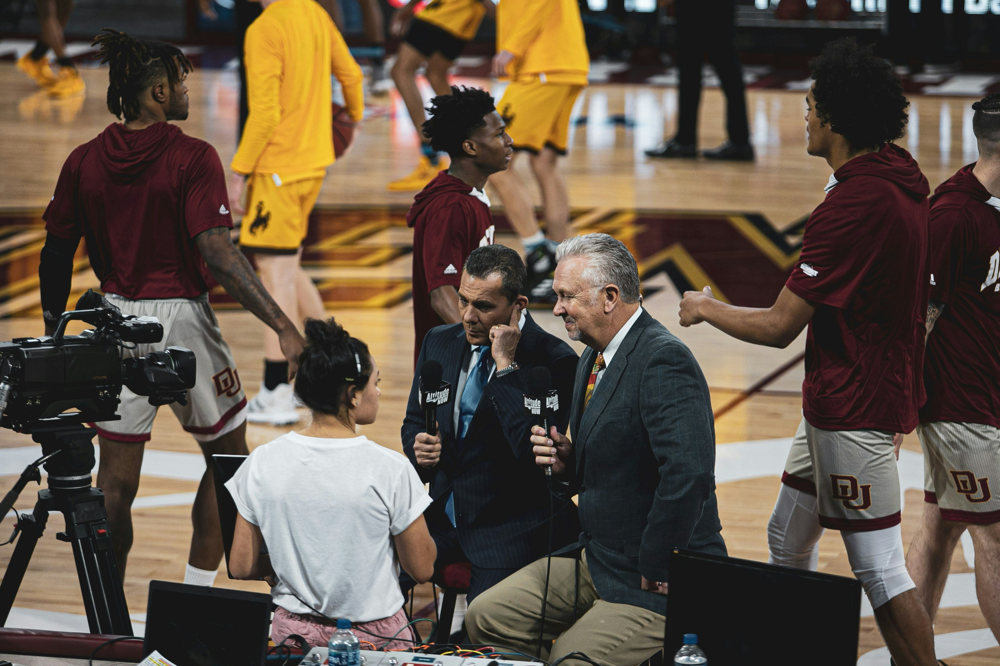
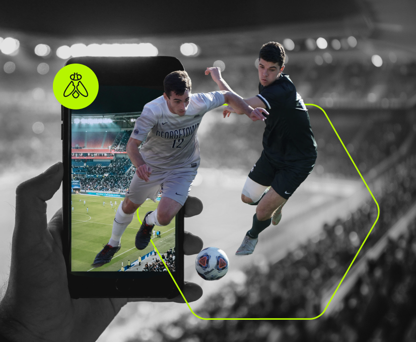
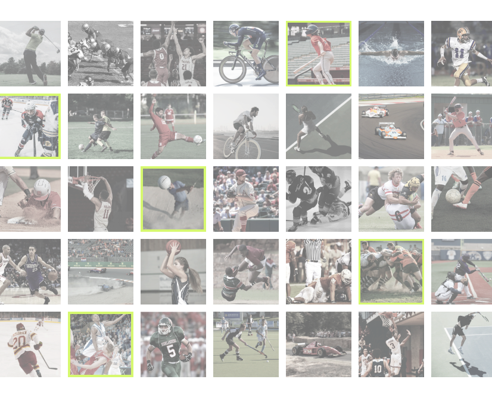
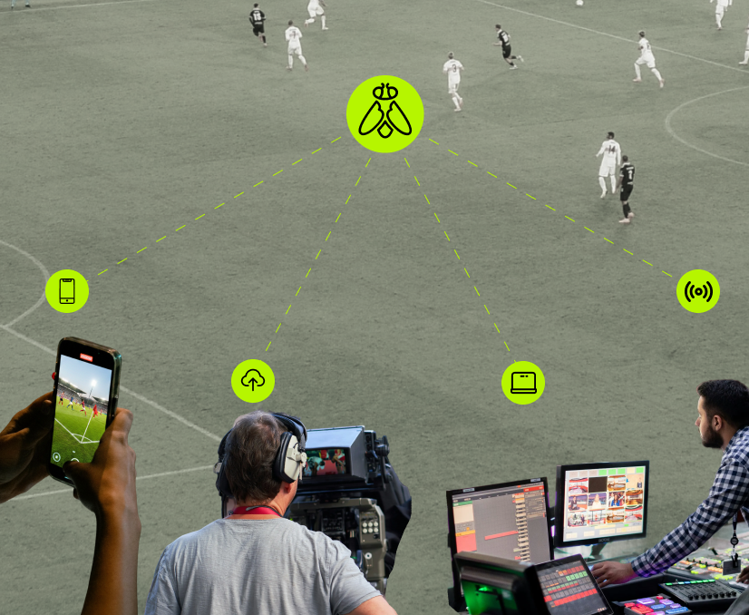
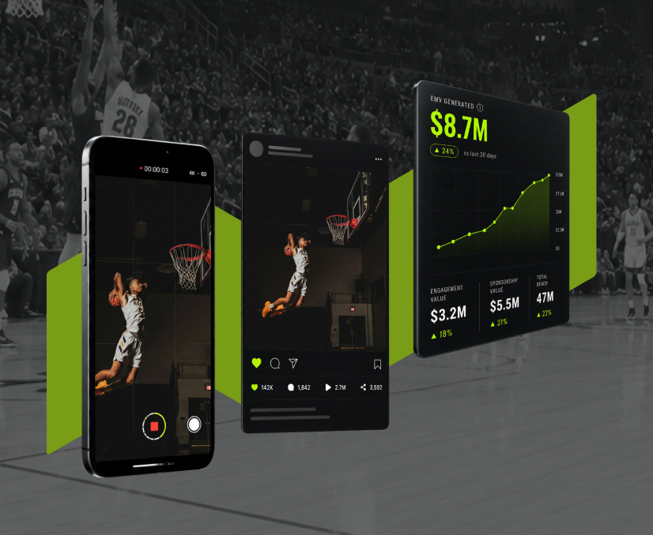

01
01
Players
01
 02
02

03Two words: content velocity. Real-time content that reaches stakeholders before the moment passes. Field to feed, pitch to publish, stage to screen, dunk to download. A to B in minutes, not hours or days.


Handle more content with the same headcount. Approval workflows, AI-powered organization, and UGC sourcing. Infrastructure that compounds.
Every source. One system. Every stakeholder. Simultaneous activation that increases distribution depth, allowing content to get everywhere it needs to go the moment it's captured.


Measurable EMV on every asset. Sponsorship proof-of-performance. New sellable inventory. Athlete distribution as a documented asset. Every impression traceable, every dollar defensible.
Greenfly is the operating system for premium content. Every asset moves through the same four-stage pipeline — from the moment a sideline cam fires, to the earned-media dollar it generates six hours later. Scroll to see a single photo travel the full journey.
Sideline cams, team phones, pro uploads — every angle lands in one library the second the whistle blows. No folders, no handoffs, no waiting.
Players, sponsors, moments, rights — recognized, labeled, and cleared before a human opens the file. Your library gets smarter with every matchday.
Athletes, teams, leagues, partners, broadcasters — each one gets the cut, format, and rights they need. Approved once, delivered everywhere.
Every share, every post, every dollar of sponsor value — tracked back to the asset ID. Proof that turns your content op from a cost into a revenue line.
Three minutes inside the Greenfly workflow — captured from a live ops center during a top-flight matchday. Then the numbers that follow.